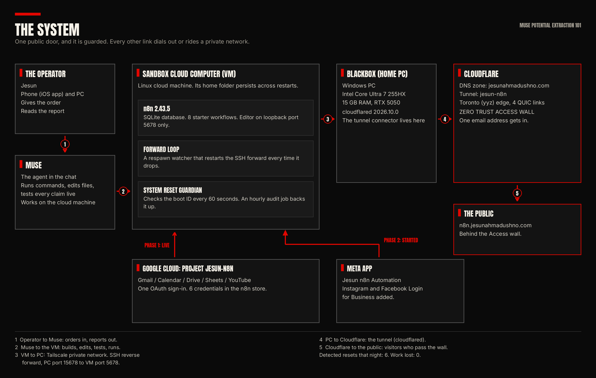
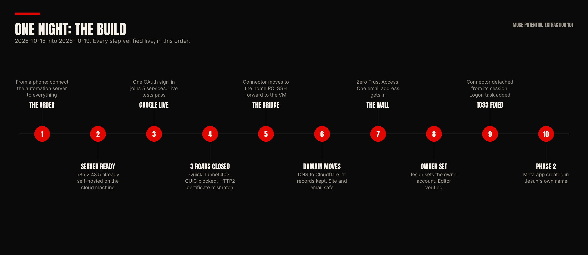
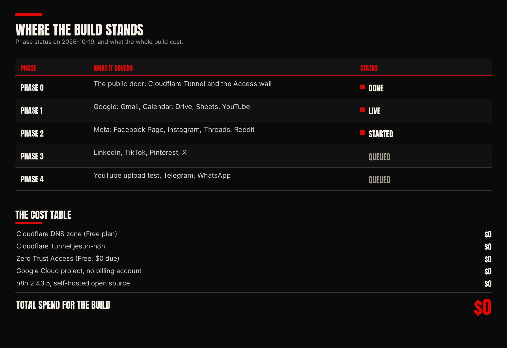

jesunahmadushno.com | Bangla edition: বাংলা সংস্করণ
Tutorial / Build log / Receipts
This is not a chatbot.
Most people use an AI chat app like a smart search box. They ask a question. They get text back. Then they do all the real work themselves.
Muse is a different shape of tool. It is a full sandbox: a cloud computer with its own terminal, browser, files, memory, and scheduled jobs. On the night of 18 to 19 October 2026, I used that computer, from my phone, to do a full infrastructure job:
- A self-hosted automation server (n8n) running on the cloud machine.
- Five Google services connected with one OAuth sign-in.
- A public address on my own domain.
- A login wall in front of it that lets exactly one person in.
- All of it on free plans. Total spend: $0.
This page is the short version. The full tutorial, with every step and every failure, is in the pack at the bottom of the page.

What was built, and why
The hub is n8n, open source workflow automation: a control panel where services connect into workflows that run on their own. I self-host it on the same cloud machine my agent works on. The machine exists already. Self-hosting costs nothing. The credential store stays on my own disk. And I can watch every step from my phone.
At the start of the night the machine ran n8n 2.43.5, a local install with a SQLite database and 8 starter workflows. It had one big limit: no public address. Nothing outside could reach it. Fixing that, safely, is the heart of this build.
Phase 1: Google in one sign-in
One Google Cloud project (jesun-n8n, no billing account). Five APIs on: Gmail, Calendar, Drive, Sheets, YouTube Data API v3. One OAuth consent, with the consent screen set to "In production" so the tokens do not die after 7 days. One sign-in connected all five services. Five typed credential copies came from the one base credential, one per service node type, so the store holds 6 Google credentials.
Then the tests, because a stored credential is not a connection. All five services passed live API tests with real data: real inbox subjects, real events, real files, real spreadsheet rows, and my real YouTube channel, at 69 subscribers at the time of the test. Three services passed a second test inside n8n workflows. One honest gap: YouTube channel read is verified; upload is not tested yet.
The door problem, and the three walls
A loopback-only server cannot take visitors, webhooks, or public OAuth callbacks. The standard door is a Cloudflare Tunnel. The connector was meant to run on the cloud machine. Three routes failed, each verified, none assumed:
- Quick Tunnel: provisioning refused, HTTP 403.
- QUIC: the machine blocks UDP egress; the tunnel died with "operation not permitted".
- HTTP2: the machine's DNS is intercepted, so the edge certificate name did not match what the client expected, and the secure connection never formed.
Lesson: when someone else runs the network, some roads are closed. Do not push on a closed road. Move the part that needs the open road.
The bridge (the move that worked)
The connector does not care where it runs. It needs Cloudflare's edge and the n8n server. My home PC has normal internet, so the connector moved there:
- cloudflared 2026.10.0 on the home PC (BlackBox) holds the named tunnel, jesun-n8n, with 4 QUIC connections to Cloudflare's Toronto edge.
- The PC and the cloud machine share a private Tailscale network. SSH runs over it. No public SSH port exists.
- An SSH reverse forward binds the PC's own port 15678 and lands traffic on the cloud machine's port 5678, where n8n listens.
- A respawn loop on the cloud machine keeps that forward alive, because quiet SSH sessions on this link die after about a minute.
Path of one visit: visitor, Cloudflare edge, tunnel, home PC, private forward, cloud machine, n8n. No inbound port open anywhere.

The domain move and the wall
The domain moved to Cloudflare DNS on the Free plan without breaking anything: zone created first, the automatic scan checked against the live records (11 records: the GitHub Pages site, 5 email-forwarding MX records, the SPF record), the tunnel route added, and only then the nameservers changed at the registrar. After the switch: site up, mail records answering, zone active.
In front of the editor sits Cloudflare Zero Trust Access (Free plan). One application, "n8n Editor". One policy, "Jesun only". One email on the allow list. Anyone else stops at the Access sign-in and never reaches n8n. I set the owner account myself through that public editor, with my own password.

What broke (the short honesty section)
The cloud machine restarted 6 times that night. Every restart killed n8n and the bridge loop. A self-built reset guardian, which checks the machine boot ID every 60 seconds, caught each restart in 47 to 78 seconds, and the work came back from checkpoints each time. Work lost across all 6 restarts: zero.
The public address once showed error 1033, because the connector had been started inside an SSH session and died with it. The fix: run it detached, and let a logon scheduled task bring it back after a PC reboot.
Still weak, stated plain: if the home PC sleeps or is off, the public address sleeps with it. This is a personal automation stack, not hosting for other people.
The full pack
- The full tutorial (EN and BN editions, PDF and markdown)
- The supporting pack: step checklist, architecture one-pager, troubleshooting table, glossary
- The charts on this page, at full size
Get it two ways:
Download the tutorial pack Open the repoOr by DM: comment TUNNEL on the launch posts (Facebook, Instagram, TikTok, YouTube) and the pack arrives by DM.
What comes next
Phase 2 has started: a Meta developer app in my name ("Jesun n8n Automation"), with Instagram and Facebook Login for Business added and the n8n OAuth redirect registered. Wiring and live tests are pending, and the build will be documented the same way: receipts first, claims after tests.